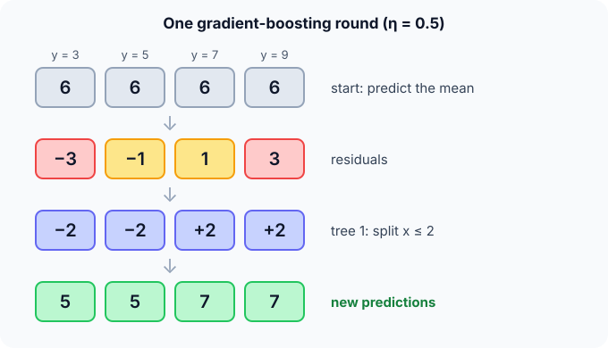

Prerequisites
- Decision trees.
- AdaBoost: the boosting idea.
- Gradients and MSE.
The analogy
Everyday analogy
Think of a golfer: the first shot lands short and left. The second shot doesn't restart from the tee, it aims at the remaining distance from where the ball is. Each shot corrects what is left.
Gradient boosting works the same way: each new tree is trained to predict the error the current ensemble still makes, and a fraction of its prediction is added.
How it works
Notation: for squared loss, the gradient for example $i$ is $g_i = \hat y_i - y_i$ (minus the residual) and the second derivative is $h_i = 1$. $\eta$ is the learning rate, $\lambda$ the L2 penalty on leaf values.
Start with one boosting round by hand
$y = [3, 5, 7, 9]$ at $x = 1, 2, 3, 4$. Start with $\hat y = 6$ for everyone. Predict, then open "Check".
Example: predict before you read
Step 1. Compute the residuals $y - \hat y$.
Check
$[-3, -1, 1, 3]$.
Step 2. Cover the next line and guess: fit a one-split tree at $x \le 2$. Plain gradient boosting uses the mean residual per leaf. Predict the two leaf values.
Check
Left: $(-3 - 1)/2 = -2$. Right: $(1 + 3)/2 = +2$.
Step 3. Update with learning rate $\eta = 0.5$. Predict the new predictions and residuals.
Check
Left: $6 + 0.5 \cdot (-2) = 5$; right: $6 + 0.5 \cdot 2 = 7$. Residuals become $[-2, 0, 0, 2]$: smaller, and the next tree continues from there.

Quick recall: Before reading further, cover the text above and say out loud: what does each new tree in gradient boosting try to predict?
Check your answer
The residuals (more generally, the negative gradient of the loss) of the current ensemble.
Finish the picture: the XGBoost version
Gradients $g = \hat y - y = [3, 1, -1, -3]$, $h = [1, 1, 1, 1]$, regularization λ = 1.
- Leaf values $w = -G/(H + \lambda)$. Predict them for the split $x \le 2$.
Check
Left: $G = 4$, $H = 2$, so $w = -4/3 \approx -1.33$. Right: $w = +1.33$. With λ = 0 they would be −2 and +2, the plain means.
- Split gain. Predict $\tfrac12 \big[G_L^2/(H_L + \lambda) + G_R^2/(H_R + \lambda) - (G_L + G_R)^2/(H_L + H_R + \lambda)\big]$.
Check
$\tfrac12 [16/3 + 16/3 - 0] \approx 5.33$. XGBoost keeps the split only if its gain exceeds the penalty γ for adding a leaf.
Quick recall: Without scrolling up, say out loud: what are the XGBoost leaf values with λ = 1, and why are they smaller than −2 and +2?
Check your answer
−1.33 and +1.33. The λ term in the denominator shrinks leaf values towards 0, which regularizes each tree.
Full worked calculation
Two full boosting rounds on four points $x = 1, 2, 3, 4$ with targets $y = 3, 5, 7, 9$, using squared loss, learning rate $\eta = 0.3$ and penalty $\lambda = 1$. Every gradient, gain and leaf value is shown.
| $x$ | $y$ | Start $\hat y$ | $g$ round 1 | After round 1 | $g$ round 2 | After round 2 |
|---|---|---|---|---|---|---|
| 1 | 3 | 6 | 3 | 5.6 | 2.6 | 5.28 |
| 2 | 5 | 6 | 1 | 5.6 | 0.6 | 5.28 |
| 3 | 7 | 6 | −1 | 6.4 | −0.6 | 6.72 |
| 4 | 9 | 6 | −3 | 6.4 | −2.6 | 6.72 |
| MSE | 5 | 3.56 | 2.638 |
-
1Start from a constant
$$\hat y^{(0)} = \bar y = \frac{3 + 5 + 7 + 9}{4} = 6, \qquad \text{MSE} = \frac{9 + 1 + 1 + 9}{4} = 5$$The mean is the best single number under squared loss. Every tree from now on only corrects what is left over.
-
2Gradients and second derivatives
$$g_i = \hat y_i - y_i = [3, 1, -1, -3], \qquad h_i = 1$$For squared loss $\tfrac12(\hat y - y)^2$ the gradient is "prediction minus target" and the second derivative is always 1. So $H$ of a leaf is simply its number of points.
-
3Score the three possible splits
$$\text{Gain} = \tfrac12\left[\frac{G_L^2}{H_L + \lambda} + \frac{G_R^2}{H_R + \lambda} - \frac{G^2}{H + \lambda}\right]: \quad x \le 2: \tfrac12\left[\frac{4^2}{3} + \frac{(-4)^2}{3} - 0\right] = 5.333$$$x \le 1$: $G_L = 3, H_L = 1$, $G_R = -3, H_R = 3$, gain $\tfrac12(4.5 + 2.25) = 3.375$. $x \le 3$ is symmetric, also 3.375. The middle split wins because it puts all positive gradients on one side and all negative ones on the other.
-
4Leaf values
$$w^* = -\frac{G}{H + \lambda}: \quad w_L = -\frac{4}{2 + 1} = -1.333, \qquad w_R = -\frac{-4}{3} = +1.333$$Without $\lambda$ the leaves would be $-2$ and $+2$, the average residuals. The penalty $\lambda = 1$ shrinks them towards 0, which keeps any one tree from overreacting.
-
5Update with the learning rate
$$\hat y^{(1)} = 6 + 0.3 \cdot (\mp 1.333) = [5.6, 5.6, 6.4, 6.4], \qquad \text{MSE} = \frac{2.6^2 + 0.6^2 + 0.6^2 + 2.6^2}{4} = 3.56$$Only 30% of the tree's output is added. The error falls from 5 to 3.56: a modest step, on purpose, so later trees can refine instead of undoing it.
-
6Round 2: same recipe on the new gradients
$$g = [2.6, 0.6, -0.6, -2.6], \quad \text{Gain}(x \le 2) = \tfrac12 \cdot 2 \cdot \frac{3.2^2}{3} = 3.413, \quad w = \mp 1.067$$The same split wins again (the other two score 2.535). The leaves are smaller because the leftover error is smaller.
-
7Round 2 result
$$\hat y^{(2)} = [5.6 - 0.32,\; \ldots] = [5.28, 5.28, 6.72, 6.72], \qquad \text{MSE} = 2.638$$The error drops again, by about a quarter. A depth-1 tree can only produce two values, so deeper trees (or later rounds that split at $x \le 1$ or $x \le 3$) are needed to tell 3 from 5 and 7 from 9.
What the numbers tell us
Every XGBoost round is: gradients $g$, second derivatives $h$, choose the split with the highest gain, set leaves to $-G/(H + \lambda)$, add $\eta$ times the tree.
Training error went 5 → 3.56 → 2.64. The small learning rate means many rounds are needed, which is why early stopping on a validation set picks the number of trees.
The rule in plain words
Start from a constant prediction. Each round: compute every example's gradient (residual), fit a small tree to it, and add $\eta$ × the tree's output to the predictions.
XGBoost chooses splits and leaf values from the sums of gradients and second derivatives, with L2 (λ) and per-leaf (γ) penalties, and adds engineering for speed.
Quick recall: Before you read the code, describe how XGBoost computes a leaf value, in your own words. Then check below.
Check your answer
Sum the gradients $G$ and the second derivatives $H$ of the examples in the leaf, and set the leaf value to $-G/(H + \lambda)$.
The code
Read this code after you have done the round by hand. It will make more sense.
double leaf_weight(double g[], double h[], int n, double lambda) { /* XGBoost optimal leaf */
double G = 0, H = 0;
for (int i = 0; i < n; i++) { G += g[i]; H += h[i]; }
return -G / (H + lambda);
}
double split_gain(double GL, double HL, double GR, double HR, double lambda) {
return 0.5 * (GL * GL / (HL + lambda) + GR * GR / (HR + lambda)
- (GL + GR) * (GL + GR) / (HL + HR + lambda));
}Definition
What you just did, in one line: gradient boosting builds an additive model of small trees, each fitted to the negative gradient (the residuals) of the loss of the current ensemble; XGBoost is a regularized, highly optimised implementation using second-order information.
flowchart TD
A["predict a constant (the mean)"] --> B["compute residuals / gradients"]
B --> C["fit a small tree to them"]
C --> D["predictions += learning rate × tree"]
D --> E{"more rounds?"}
E -->|yes| B
E -->|no| F["final model = sum of all trees"]
How costly is it?
Quick recall: Before looking at the formula, predict: why use a small learning rate like 0.1 instead of adding each tree fully?
Check your answer
Small steps make each tree fix only part of the error, so many diverse trees combine; it overfits less, at the cost of more rounds.
The XGBoost leaf value and split gain, from gradients $g_i$ and second derivatives $h_i$:
$$w^* = -\frac{G}{H + \lambda}, \qquad \text{Gain} = \frac12\left[\frac{G_L^2}{H_L + \lambda} + \frac{G_R^2}{H_R + \lambda} - \frac{(G_L + G_R)^2}{H_L + H_R + \lambda}\right] - \gamma$$| Phase | Cost | Why |
|---|---|---|
| Training | $T$ rounds × (one tree on all rows) | Rounds are sequential |
| Split search (histogram) | about $O(n \cdot m)$ per tree level | Bins features instead of sorting |
| Prediction | $O(T \cdot \text{depth})$ | Sum of all trees' outputs |
Best for: tabular data where accuracy matters most: ranking, risk scoring, forecasting with engineered features.
- Pro: State-of-the-art accuracy on structured data.
- Pro: Handles missing values, mixed features and custom losses; fast implementations.
- Con: Many hyperparameters (rounds, depth, learning rate, λ, γ) to tune.
- Con: Can overfit if rounds aren't controlled; less interpretable than one tree.
Warning
Boosting keeps reducing training error as rounds are added, so it will overfit eventually. Use a validation set with early stopping, a small learning rate and shallow trees.
Exam tip
Contrast it with random forests: forests train deep trees in parallel and average them (variance reduction); boosting trains shallow trees in sequence, each fixing residuals (bias reduction).
Common mistakes
- Using a large learning rate with many rounds, which overfits quickly.
- Training without early stopping on a validation set.
- Thinking each tree predicts $y$; each tree predicts the remaining error.
Try it yourself
Exercise 1 (warm-up)
Predictions are $[10, 10, 10]$ and targets $[8, 11, 14]$. What are the residuals the next tree fits?
Hint
$y - \hat y$.
Answer
$[-2, 1, 4]$.
Exercise 2 (a bit harder)
A leaf contains gradients $g = [2, 2, -1]$ with $h = 1$ each. Compute its XGBoost value for λ = 0 and for λ = 3. Write your answer down before you open it.
Show answer
$G = 3$, $H = 3$. λ = 0: $w = -1$. λ = 3: $w = -3/6 = -0.5$. Larger λ shrinks the leaf towards 0.
Did you know?
Did you know?
Jerome Friedman described gradient boosting machines in 2001. Tianqi Chen's XGBoost (2014) became famous after powering many winning Kaggle solutions.
The "gradient" in the name is literal: boosting with squared loss is gradient descent in function space, where each tree is one step downhill.
Key points to remember
If you remember one thing from each line, remember the because.
- Each tree fits the residuals because they are what the current ensemble still gets wrong.
- A small learning rate helps because many partial corrections generalise better than a few big ones.
- XGBoost shrinks leaf values because λ in $-G/(H + \lambda)$ penalises large outputs.
- Boosting reduces bias because each round adds the capacity the model lacked.
- Early stopping is essential because training error keeps falling while test error eventually rises.
Self-check questions
Answer these in order, out loud. They follow the page, so your answers become the script of your video.
- How is gradient boosting like a golfer's successive shots?
Sample answer
Each shot aims at the remaining distance from where the ball landed; each tree aims at the error the ensemble still makes.
- Do one round on $y = [3, 5, 7, 9]$ starting from 6, with the split $x \le 2$ and $\eta = 0.5$.
Sample answer
Residuals [−3, −1, 1, 3]; leaves −2 and +2; new predictions [5, 5, 7, 7]; new residuals [−2, 0, 0, 2].
- Why does
leaf_weightreturn $-G/(H + \lambda)$ instead of the plain mean?A good answer covers both λ and the minus sign.
Sample answer
$G$ sums gradients $\hat y - y$, so moving against them needs a minus sign; with squared loss and λ = 0 it equals the mean residual, and λ > 0 shrinks it to regularize.
- So what is gradient boosting, in one sentence?
Sample answer
An ensemble of small trees built one after another, each fitted to the residuals (gradients) of the current model and added with a learning rate.
- Why does boosting reduce bias while random forests reduce variance?
A good answer compares shallow sequential trees with deep parallel ones.
Sample answer
Boosting adds shallow trees that each fix remaining errors, increasing the model's capacity step by step. Forests average deep, already flexible trees to cancel their instability.
- What are the XGBoost leaf value and split gain formulas?
Sample answer
$w^* = -G/(H + \lambda)$; gain $= \tfrac12[G_L^2/(H_L + \lambda) + G_R^2/(H_R + \lambda) - (G_L + G_R)^2/(H_L + H_R + \lambda)] - \gamma$.
- Give two pros and two cons.
Sample answer
Pros: top accuracy on tabular data; handles missing values and custom losses. Cons: many hyperparameters, and it overfits without early stopping.
- If you had to teach this to a friend in 2 minutes, what would you leave out, and why?
Sample answer
I'd leave out the second-order formulas and γ. I'd keep the golfer analogy, the one-round residual example, and "each small tree fixes the leftover error; small learning rate, early stopping".
External resources
- XGBoost docs: Introduction to boosted trees: the derivation of the leaf and gain formulas.
- scikit-learn: Gradient boosting: GradientBoosting and HistGradientBoosting.
- Wikipedia: Gradient boosting: theory and history.
Videos
- YouTube search: StatQuest gradient boosting and XGBoost: StatQuest's multi-part series.